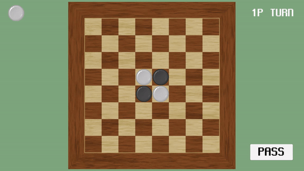
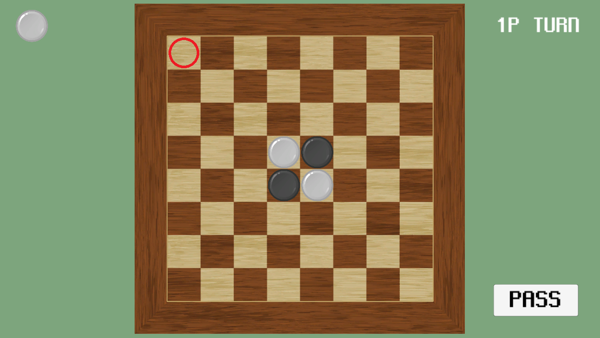

GAME LOGIC
유니티 엔진에서 구현한 게임 개발에 사용된 다양한 로직들을 소개합니다.
Unity2D - 보드게임 로직(오델로)


유니티에서 보드게임 오델로(Othello)의 로직을 구현했습니다.

먼저 오델로 보드를 유니티 화면에 구성합니다.
보드의 각 칸마다 버튼을 배치하여 클릭 시에 해당 칸의 좌표를 스크립트에 전달 가능하도록 미리 준비합니다.
보드의 각 칸마다 버튼을 배치하여 클릭 시에 해당 칸의 좌표를 스크립트에 전달 가능하도록 미리 준비합니다.
해당 스크립트에서 구현된 함수인 "setData()" 함수를 보드 클릭 시에 좌표를 전달하며 호출하여 게임이 진행됩니다.
해당 좌표에 돌을 놓았을 경우 그 좌표를 기준으로 가로, 세로, 대각선을 탐색하여 해당 돌을 배치했을때 상대방의 돌을 뒤집어야 하는 경우를 모두 적용하여 게임에 반영합니다. 최종적으로 모든 칸에 돌을 배치했을 때 더 많은 돌을 배치한 쪽의 승리입니다. 그 외에 화면에 출력되는 UI나 연출 등은 추가적으로 엔진을 통해 완성합니다.
해당 좌표에 돌을 놓았을 경우 그 좌표를 기준으로 가로, 세로, 대각선을 탐색하여 해당 돌을 배치했을때 상대방의 돌을 뒤집어야 하는 경우를 모두 적용하여 게임에 반영합니다. 최종적으로 모든 칸에 돌을 배치했을 때 더 많은 돌을 배치한 쪽의 승리입니다. 그 외에 화면에 출력되는 UI나 연출 등은 추가적으로 엔진을 통해 완성합니다.